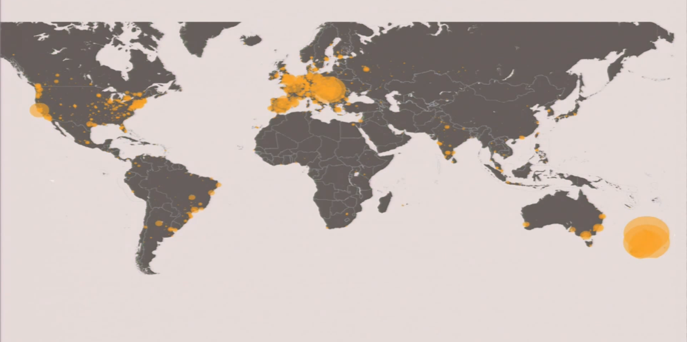
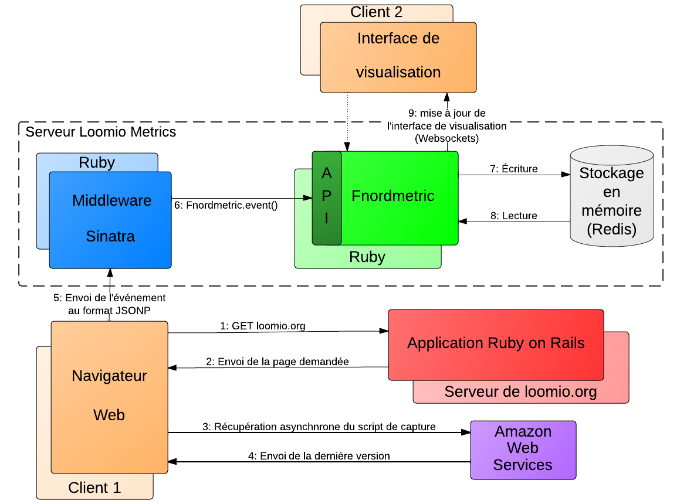
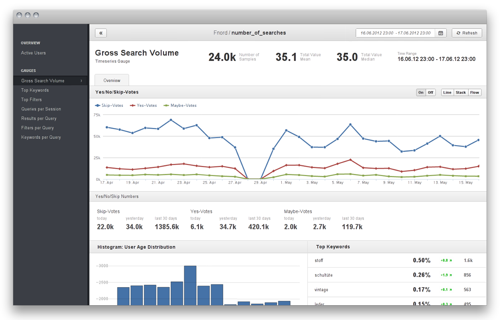
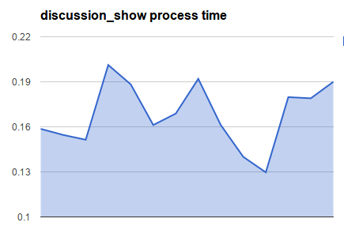

Un outil collaboratif pour la prise de décisions
Stage TN10 − Filière MPL
Étudiant − Nicolas Wormser
Tuteur − Jon Lemmon
Responsable pédagogique − Alain Ploix
Loomio en quelques chiffres
1 coopérative sociale
20 pays
7 langues
12 membres
20+ contributeurs bénévoles
6000+ utilisateurs inscrits
1750+ groupes de discussion
Cartographie des utilisateurs
Mission au sein de l'équipe
- MetricsEngine : Collecte de données applicatives
- Étude comportementale (assiduité, chaîne d'actions)
- Amélioration de l'ergonomie
- Suivi et amélioration des performances de l'application principale
- Performance
- Stabilité
Architecture de la solution de collecte de données
Exemple de visualisation
Tests de performance
- Un environnement dédié
- Mise en cache
- Données de semi-production (RakeTask)
- Lancé périodiquement afin de pouvoir comparer les résultats en fonction du temps
$ cat HomepageTest#test_discussion_show_process_time.csv
measurement,created_at,app,rails,ruby,platform
0.1586437398000001,2013-07-22T21:57:57Z, ...
0.1545968239999222,2013-07-23T07:43:03Z, ...
0.1514014521600001,2013-07-23T08:58:32Z, ...
0.2012038972394001,2013-07-29T07:21:80Z, ...
0.1882918889884001,2013-07-29T08:31:10Z, ...
0.1612038972394001,2013-08-01T08:12:48Z, ...
0.1688199067574929,2013-08-02T08:33:30Z, ...
0.1919832749800000,2013-08-02T09:14:12Z, ...
0.1612038972394001,2013-08-07T02:41:40Z, ...
0.1399998818927222,2013-08-11T09:22:11Z, ...
0.1296886899990001,2013-08-11T10:13:30z, ...
0.1797789199991101,2013-08-12T18:21:16Z, ...
0.1789992002222111,2013-08-15T20:17:42Z, ...
0.1899981000018888,2013-08-16T08:28:15Z, ...
Visualisation du fichier CSV
Dans les prochains mois
- [Metrics] Utiliser les données de production
- [Metrics] Remplacer Fnordmetrics par une solution plus spécifique (Dashing + Accès direct Redis)
- [Metrics] Data Mining sur les données récoltées
- [Perf] Automatiser le lancement des tests de performance (Pre-commit hook)
- [Perf] Exécuter les tests de performance sur le serveur d'intégration continue